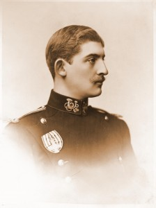
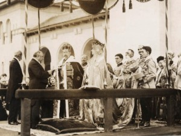

© Muzeul Național Peleș


 printați
printați
+40244 310 918 |
peles.ro@gmail.com |
Regele Ferdinand I
|  | Ferdinand – Victor – Albert – Meinard s-a născut la 24 august 1865, la Sigmaringen, ca al doilea fiu al principelui Leopold de Hohenzollern, fratele mai mare al regelui Carol I și al prințesei Antoaneta, infanta Portugaliei. |
Profesorul V. D. Păun, de la Liceul Sfântul Sava din București, ii face, într-o broșura apăruta în limbile romana, franceza și germana, următorul portret: ,,Bălan, năltuț și subțirel la trup, cu ochii albaștri închiși, foarte blânzi… Principele Ferdinand si-a petrecut copilăria la Düsseldorf – focar de cultura eleganta. Acolo si-a terminat Alteța Sa învățăturile secundare clasice și a trecut cu lauda examenul de „Abiturient”, corespunzător bacalaureatului nostru… în urma, a intrat în serviciul activ, ca sublocotenent în Regimentul I de Garda Imperiala de la Potsdam, lângă Berlin, iar după doi ani de practica ostășeasca la cazarma și pe câmp a luat din nou drumul scolii, ascultând la Uni versatile din Tubingul și Leipzig cursuri de economie politica, științe financiare, istorie, dreptul ginților și dreptul roman ținute de profesori celebri”.
Ferdinand și Maria Semnificativ pentru înțelegerea personalității regelui Ferdinand este și portretul schițat de Nicolae Iorga: ,,ca tânăr, se poate spune ca însușirea caracteristica a principelui Ferdinand era o extrema modestie amestecata cu o timiditate aproape chinuitoare. Foarte curtenitor și politicos, se ferea totdeauna de a jigni sentimentele cuiva și ceda terenul chiar când cunoaște subiectul în discuție mai bine decât cei cu care discuta. Ii plăcea singurătatea, natura și arta. Urând orice pompa și ceremonie zadarnica, moștenise totuși de la mama sa o sfioasa mândrie unita cu un respect german pentru legi și forme. Disciplina cea mai absoluta fusese principala linie a educației sale și un simt de datorie care i-a rămas în toata viata, ajutând-i neînduplecat sa biruie sentimentele lui personale, neîngăduind-le vreodată sa se pună la mijloc intre dansul și ce trebuia sa facă. Blând, fără egoism, cei ce-l cunoșteau adânc îl iubeau”.
La 10 ianuarie 1893 are loc la Sigmaringen căsătoria sa cu Maria de Edinburgh, prințesa de Saxa – Coburg – Gotha, prin care se realiza o alianța politica de mare importanta pentru Regat.
Ferdinand în data de 3 august 1914 a avut loc la Sinaia, în Sala veche de muzica a castelului Peleș, Consiliul de Coroana ce a hotărât neutralitatea României în primul război mondial. Câteva săptămâni mai târziu, la 27 septembrie 1914, tot la Peleș, se stinge din viața regele Carol I. Este înmormântat la biserica mânăstirii Curtea de Argeș, ctitoria lui Neagoe Basarab. Ferdinand devine rege la 49 ani, jurând în fata membrilor Parlamentului ca va fi ,,bun roman”.
în iunie 1916, Antanta se afla în dificultate pe frontul de vest. M. V. Alexeev, șeful Marelui Stat Major al armatei ruse și generalul Joffre, comandant șef al armatei franceze, au cerut intrarea României în război ,,acum ori niciodată”.
Pe 17 august 1916 s-a semnat convenția politica intre Romania, pe de o parte și Franța, Marea Britanie, Italia și Rusia pe de alta parte, prin care Antanta recunoștea legitimitatea unirii Bucovinei, Transilvaniei și Banatului cu Romania.
De la 1838 statul Sigmaringen nu mai exista, el fusese unit cu posesiunile prusiene și fostul suveran, Carol Anton, bunicul regelui Ferdinand, primise cu bucurie aceasta contopire a moștenirii Hohenzollernilor de la Rhon în puternicul regat germanic de Răsărit, caci, era un partizan hotărât al unirii neamului sau, prin lupta și jertfa. Credința ca nimeni nu are dreptul de a opri o nație sa trăiască în hotarele ei firești a fost transmisa și printului Ferdinand.
Ca o cruda ironie a sortii însă, regele Ferdinand a făcut uz de acest crez în folosul tarii adoptive, atrăgând-si astfel aspre critici și sancțiuni din partea șefului familiei de Hohenzollern.
La 27 august 1916, are loc în sufrageria Palatului Cotroceni, Consiliul de Coroana în care regele Ferdinand declara: ,,cu sufletul torturat am hotărât de a-mi face datoria fata de poporul rămân, ale cărui destine le conduc”. în aceeași zi a fost prezentata de ministrul României la Viena, ministrului de externe al Austro – Ungariei declarația de război a României. Din acest moment nu se putea îndeplini decât una dintre profețiile lui N. Filipescu: ,,Sire, sa te încoronezi la Alba – Iulia sau sa mori pe câmpia de la Turda”. |
 |
Izbucnirea revoluției ruse complica și mai mult lucrurile. Se avea în vedere o lovitura de stat, prin care regele Ferdinand și familia sa fie duși în Rusia, pentru a avea o soarta asemănătoare cu a dinastiei Romanov. Regele hotărăște sa plece pe front, de unde se adresează ostașilor promițând pământ țăranilor și o mai larga participare la treburile statului. Este reprezentativ faptul ca în armata romana se înrolau voluntari ardeleni și bucovineni.
Dupa imensele sacrificii de la Mărăști, Mărășești și Oituz, din vara anului 1917, Romania se vede singura în fata Puterilor Centrale, datorita retragerii Rusiei, bulversata de revoluție și nu are alta opțiune decât negocierea unei păci pe care regele Ferdinand nu a ratificat-o niciodată.
La 18 noiembrie 1918, regele Ferdinand se întoarce din refugiu, la București, în fruntea oastea sale, trecând pe sub Arcul de Triumf. în timpul recepției oferite, în aceeași zi, oficialităților romane și generalului Berthelot, regele a afirmat: ,,Când am luat moștenirea întemeietorului României moderne am făgăduit înaintea reprezentanților națiunii ca voi fi bun roman; cred ca m-am ținut de cuvânt. Grele au fost timpurile, mari au fost jertfele, dar strălucita a fost răsplata și astăzi pot spune cu fruntea senina: fata de Dumnezeu și de poporul meu am conștiința curata”, continuând apoi: ,,după Basarabia și Bucovina, Ardealul, frumosul leagăn al poporului roman, de unde au descălecat întâii voievozi ai tarilor romanești, a votat la Alba – Iulia unirea cu Regatul Roman”.
în 1914, Romania Mica avea 137.000 Km², cu 7.700.000 locuitori. în 1918, Romania Mare, cu Transilvania, Bucovina, Basarabia, Cadrilaterul, avea 295.000 Km², cu 17.000.000 locuitori.
în 15 octombrie 1922, la Alba – Iulia, regele Ferdinand I Întregitorul este încoronat ca rege al tuturor romanilor ,,de la Nistru pan’ la Tisa”. Ceremonia are loc în noua și grandioasa catedrala ortodoxa, construită special pentru această ocazie.
în 1923 a fost adoptata o noua Constituție, adaptata la realitățile postbelice de după făurirea României Mari. Ea relua principiul fundamental al monarhiei constituționale: ,,Regele domnește, dar nu guvernează”.
în 20 iulie 1927, regele Ferdinand I Întregitorul sau Lealul, cum i s-a mai spus, se stinge din viața în castelul Pelișor, la 62 de ani, în urma unei suferințe îndelungate pricinuita de un cancer la colon.